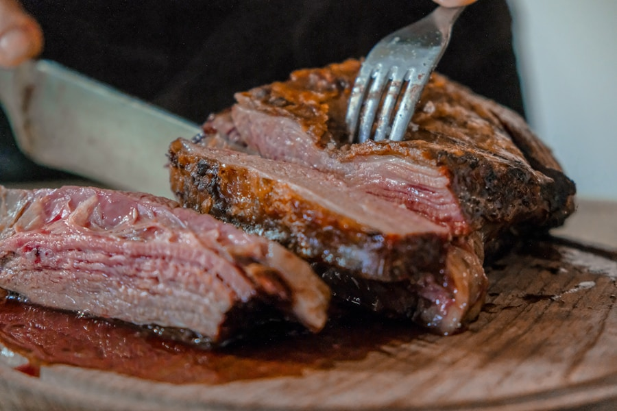
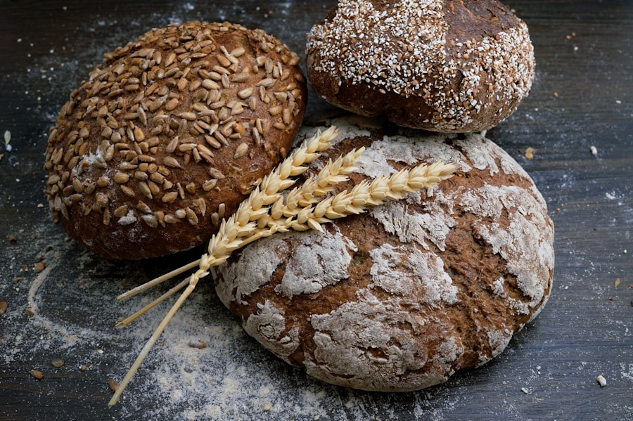
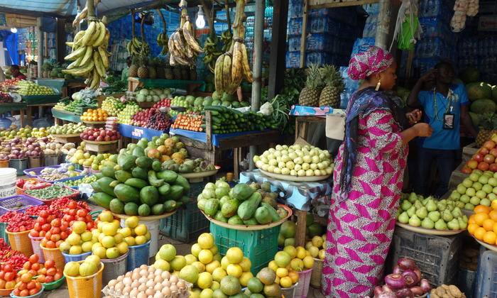
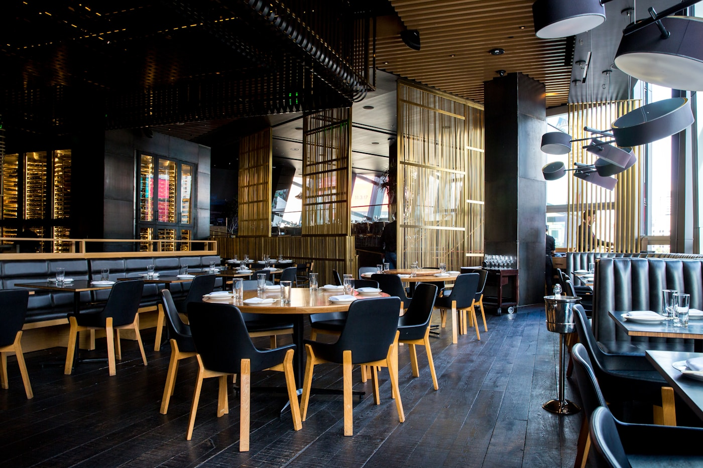

01 · CUSTOMERSYour favorite food.
Your favorite food.
Without the walk.
See what's nearby, know the total, follow the rider.
Start shopping ↗
Food, groceries, parcels and more — from the people and places you already know, brought to your door.
 WADATA MARKET
WADATA MARKETFidelx connects the market to your phone — customers who need something, vendors who have it, and riders who can move it.
See how Fidelx works ↗Order lunch, grow a stall or find your next delivery — the experience starts in the same place.
See what's nearby, know the total, follow the rider.
Start shopping ↗
One dashboard for products, orders and earnings.
List your business ↗
Choose nearby deliveries. See the fee. Get paid.
Start riding ↗


Fidelx is built around the actual handoff: a real vendor, a real order, a real rider and a real destination.
From payments and verification to community partnerships, Fidelx grows through relationships — not just integrations.
Become a partner ↗
We'll keep the important stuff clear.
No. Fidelx works in your phone browser, and you can add it to your home screen.
Yes. Your order shows a live rider location once it is on the move.
You have a 24-hour window to raise a dispute so the team can review it.
We are starting in Otukpo and expanding as our local rider network grows.
 Founder portrait — placeholder
Founder portrait — placeholderFidelx was born from a dream to make everyday commerce feel closer, easier, and more connected. Not to build another delivery app that could have been dropped into any city, but to build something that understands the streets, the markets, the people, and the rhythm of life here.
Our startup manager saw a gap between the businesses people already trusted and the convenience people increasingly expected. Vendors had great products but limited reach. Customers wanted things without the extra trip. Riders had the ability to earn but needed a better flow of opportunities. The pieces were already there — they just needed to move together.
That dream became Fidelx: a place where a stall can become a storefront, where a rider can turn a few free hours into income, and where a customer can order from someone they might have passed in the market that morning and have it arrive at their door.
“We don't want to take the market away from the people who built it. We want to help the market move further.”
This is only the beginning. We are starting in Otukpo, learning from the people here, and building something worthy of the trust that makes a local marketplace work.